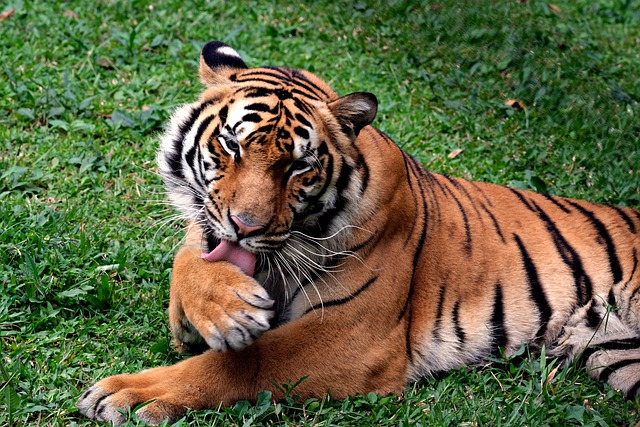
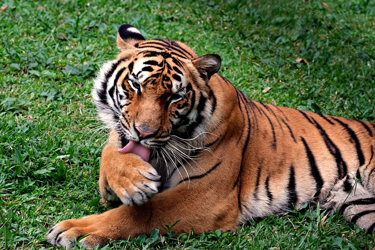

Introduction
Wildlife animals are vital to maintaining ecological balance, inhabiting diverse ecosystems like forests, oceans, and grasslands. They face threats from habitat destruction and climate change, making conservation crucial for their survival.
According to COSEWIC's wildlife assessments as of May 2022, there are 841 wildlife species in various risk categories, including 371 Endangered, 196 Threatened, 253 Special Concern, and 21 Extirpated. In addition, 23 wildlife species have been assessed as Extinct.

Endangered Animals
Here are a few species of endangered animals:
 



Comparison of Endangered Species
| Species | Habitat | Population (Estimate) | Threats | Conservation Status |
|---|---|---|---|---|
| Bengal Tiger | Forests and grasslands | ~2,500 | Poaching, habitat loss | Endangered |
| African Elephant | Savannas and forests | ~415,000 | Ivory trade, human-wildlife conflict | Vulnerable |
| Green Sea Turtle | Oceans and beaches | Declining | Bycatch, plastic pollution | Endangered |
| Snow Leopard | Mountain regions | ~4,000–6,500 | Poaching, habitat fragmentation | Vulnerable |
| Vaquita (Porpoise) | Marine (Gulf of California) | < 20 | Fishing net bycatch | Critically Endangered |
Protection Guide
- Learn about endangered species in your area
- Minimize use of herbicides and pesticides
- Avoid hunting endangered species
- Recycle and buy sustainable products
- Volunteer with conservation organizations
Comments
By Bob on January 5, 2025
It's sad to see so many endangered species; we need to act now to save them.
By Alice on December 29, 2024
Great article! Can you suggest places to volunteer?